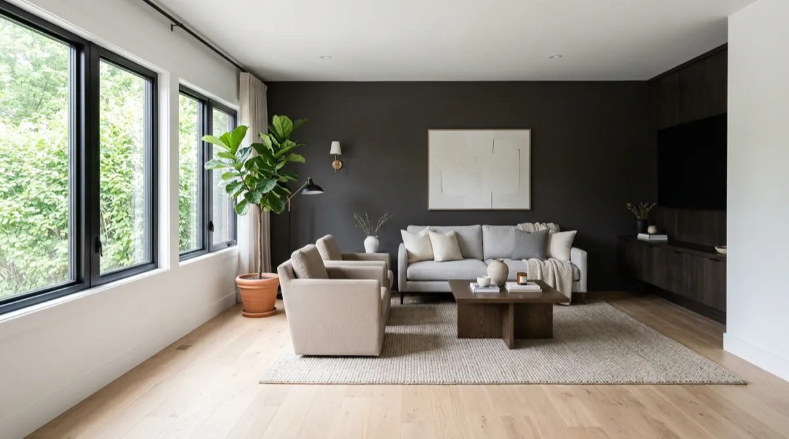

Residential Painting in Celina, TX
Plan a fresh finish for your Celina home, from several rooms to a whole-home repaint. Include walls, ceilings, trim and any drywall repairs in one request so the preparation and painting scope are clear. Read our Google reviews.
Interior painting in Celina starts with the rooms, surfaces and preparation your home needs. OnPoint Pros handles residential whole-home and multi-room repaints, accent walls, ceilings, trim and cabinet refinishing. Send wide views and close-ups of damaged areas for a scope review; the written estimate follows the work and access requirements. Read our Google reviews.
These examples from our regional project portfolio show room refinishing, an accent-wall repaint and office wall work. Use them to plan finishes for your Celina home. The office comparison shows finished walls with a floor strip still unfinished.
 BEFORE
BEFORE AFTER
AFTERStone features and built-ins removed, with the walls and ceiling finished in a lighter palette. The original tile floor remains.

A living-room accent wall repainted in a neutral color, with the existing doorways and furnishings visible in both photos.
 BEFORE
BEFORE AFTER
AFTERHeavy wall texture replaced with a finer finish and darker paint. This comparison shows the wall work; the exposed floor strip is still unfinished.
See more painting project details and home refresh options when you are planning several improvements together.
A useful painting quote starts with what is included. For your Celina home, list the rooms and identify walls, ceilings, closets, doors and trim separately. Include cabinets if you want their existing finish assessed for refinishing.
Preparation depends on the surfaces. Point out cracks, nail pops, old patches, peeling paint and stains so repairs, cleaning, sanding, caulking and any necessary primer can be discussed before the finish coats. Active moisture problems need to be addressed before damaged areas are closed or painted.
A larger repaint also needs an access plan. Let us know about tall ceilings, furniture, pets and occupied rooms. Confirm the surface preparation, paint and sheen choices, protection, cleanup and sequence in the written scope; drying and curing times vary with the materials and conditions.
Plan several rooms or a whole-home interior repaint, with walls, ceilings and trim listed clearly in the estimate.
Share cabinet photos so the existing finish, condition and preparation can be assessed. Confirm the coating and application method in the scope.
Change a feature wall or coordinate colors across adjoining rooms. Include the current color, desired finish and nearby surfaces in your request.
Include ceiling height, texture, stains and access in the quote request. Surface repairs and protection should be agreed before painting.
Refresh the details alongside the walls. Identify the surfaces and existing coating so preparation and a suitable finish can be planned.
Include wall damage with your repaint scope. New patches and existing paint can differ in texture, color and sheen; repainting a whole wall may give a more consistent result.
“Dillon and Blake did good job with repairing drywall, they did beyond expectations. Appreciate their help and they are very prompt and professional and shown is their own problem to make it better.”
— Rohan Chandra
Verified Google review
A lot of Celina homeowners start with a fresh coat of paint, then have us take on the bathroom remodel they've been putting off. One project lead, one point of contact.
See Celina Bathroom Remodeling →The estimate depends on the rooms and surfaces included, their condition, preparation, ceiling height, access and paint choices. Send wide room photos, close-ups of damaged areas and approximate dimensions. Photos help with the initial review; a site visit may be needed before the written scope and price are confirmed.
Yes. List every room and whether walls, ceilings, closets, doors, trim and cabinets should be included. Share the current colors, desired changes and whether the home is occupied so the work can be planned together.
Yes. Include cracks, holes, nail pops and old patches in your photos so repair, texture and priming can be considered with the painting. Existing color, sheen and texture affect how a repair blends; a whole-wall repaint may be appropriate. Active moisture problems should be resolved before repairs and paint.
Tell us which rooms you need to use, plus any furniture, pets or ventilation concerns. Access and the order of work need to be agreed for the scope and products selected; do not assume every room can remain usable throughout the project.
Timing depends on the number of rooms, surface condition, repairs, coats, access and drying or curing requirements. Confirm the sequence and expected schedule after the scope and materials are reviewed; a photo alone does not establish a completion date.
Also serving Celina for whole-home remodeling.
Tell us which rooms and surfaces you want painted. Use the form below for the scope, or send project photos with your painting request.
Call (469) 617-5235